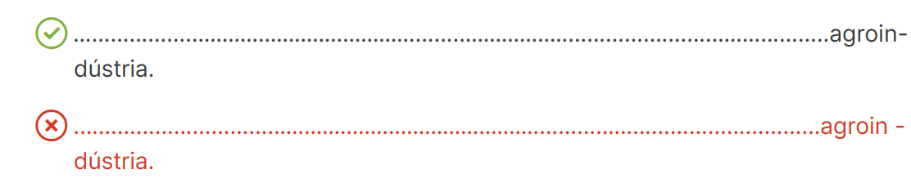
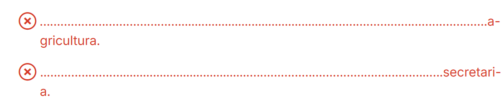
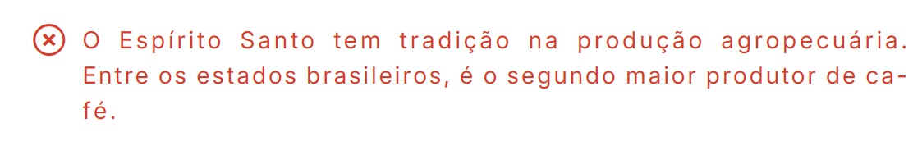
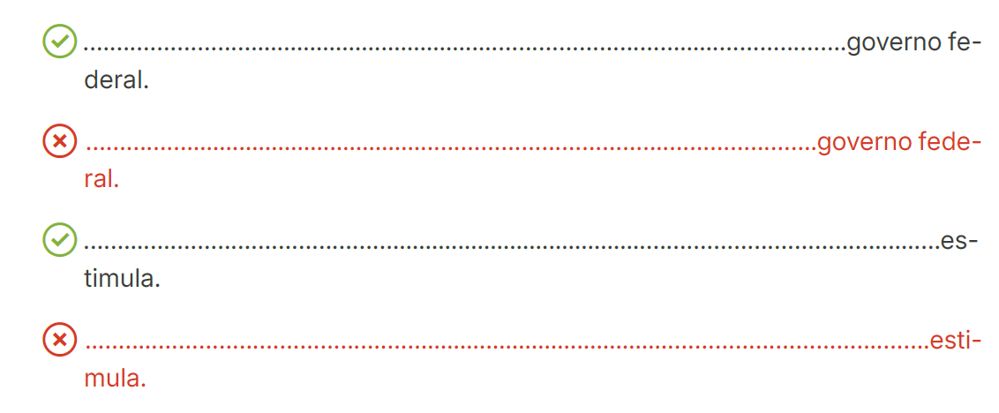
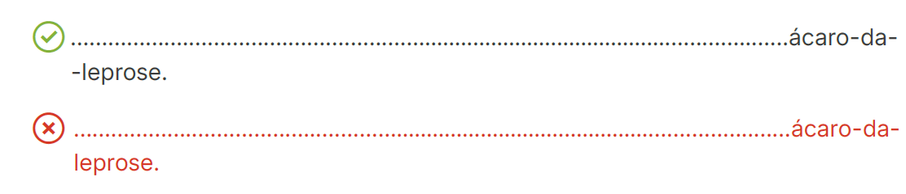
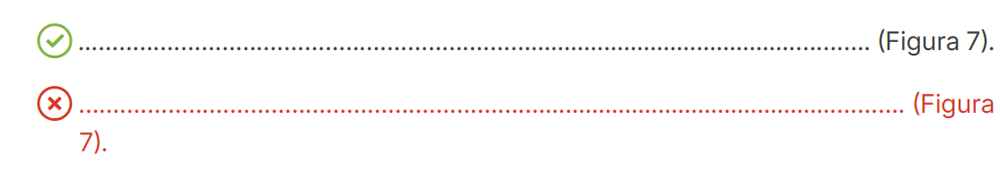
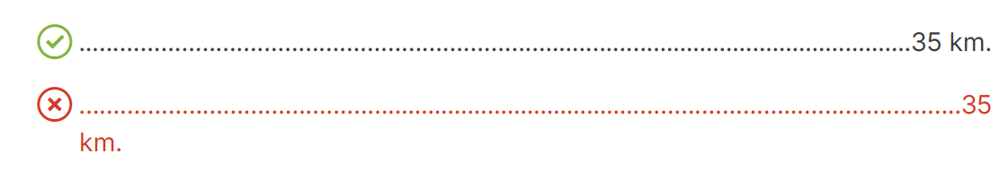
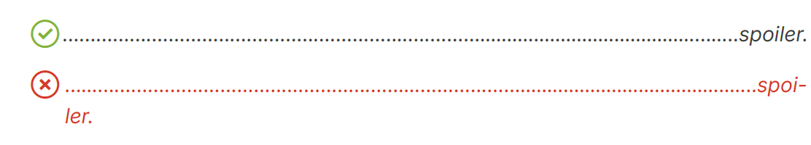
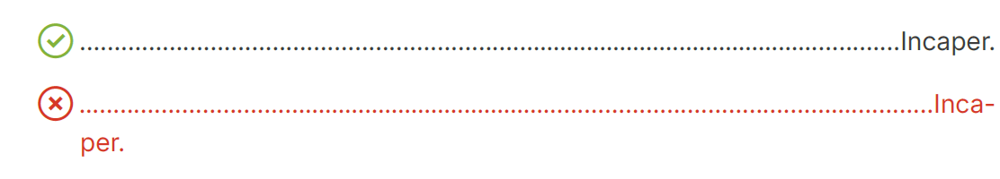

Este capítulo reúne diretrizes de padronização e estilo adotadas pela Editora Incaper com o objetivo de assegurar a uniformidade e a qualidade textual das publicações institucionais. Ao definir parâmetros editoriais para redação e normatização, esta seção do manual contribui para a excelência editorial e reforça a identidade dos produtos editoriais publicados pelo Incaper.
10.1 SIGLAS
Sigla é a sequência formada por letras ou partes iniciais de palavras que constituem o nome de uma empresa, instituição, órgão, programa, entre outros.
1 As siglas com até três letras devem ser escritas com maiúsculas.
Exemplo: USP, OAB, ONU.
2 As siglas com mais de três letras, pronunciadas como palavras, devem ser escritas apenas com a inicial maiúscula.
Exemplo: Incaper, Idaf, Seag, Ceasa, Secom, Detran, Unesco, Petrobras, Embrapa, Enap.
3 As siglas com mais de três letras, quando soletradas, devem ser escritas em letras maiúsculas.
Exemplo: INSS, UFMG, IBGE.
4 Algumas siglas contam com formas já reconhecidas e usuais e, por isso, devem ser respeitadas.
Exemplo: UnB, ProJovem, ICMBio, CNPq.
5 Para formar o plural, deve-se acrescentar um “s” minúsculo ao fim da sigla, sem apóstrofo.,/
Exemplo: ONGs, EPIs.
Exemplo: Tanto os produtores quanto o meio ambiente se beneficiam da aplicação das boas práticas agrícolas (BPA).
6 Nas siglas formadas a partir de expressões e nomes comuns, a forma por extenso é escrita com iniciais minúsculas.
Exemplo: O custo operacional efetivo (COE) corresponde a todos os custos incorridos em um ano agrícola.
Exemplo: O Ministério da Agricultura e Pecuária (Mapa) é responsável pela implementação de políticas públicas voltadas para o desenvolvimento da agropecuária em nosso país.
7 Quando mencionada pela primeira vez no texto, deve ser escrita primeiramente por extenso, seguida da sigla entre parênteses (forma mais visual) ou separada por traço (meia-risca “–”).
Exemplo: Instituto Capixaba de Pesquisa, Assistência Técnica e Extensão Rural (Incaper).
Exemplo: Instituto Capixaba de Pesquisa, Assistência Técnica e Extensão Rural – Incaper.
10.2 ABREVIATURAS E ABREVIAÇÕES
10.2.1 Abreviatura
A abreviatura é o encurtamento de uma palavra ou expressão. Geralmente, é formada pelas letras iniciais e acompanhada de um ponto final abreviativo. Deve ser usada com cautela para não comprometer a compreensão da mensagem. Em geral, é empregada quando há necessidade de redução de espaço em títulos, legendas, tabelas, gráficos e infográficos, por exemplo, devendo ser evitada no texto corrido.
- Não existe uma regra para a formação de abreviatura, mas, em geral, opta-se por interrompê-la na primeira consoante da segunda sílaba.
Exemplo: biol. (biologia), núm. (número), peq. (pequeno).
- Quando a primeira sílaba da palavra é curta ou é uma vogal isolada, normalmente a abreviatura vai até a consoante da terceira sílaba.
Exemplo: agric. (agricultura), anál. (análise), agron. (agronomia).
- Quando a palavra é formada por prefixo, o mais comum é ele vir acompanhado da primeira sílaba ou consoante.
Exemplo: indef. (indefinido), antrop. (antropologia), morfol. (morfologia).
Exemplo: a.C. (antes de Cristo), D. (Dona), fl. (folha), Ltda. (limitada).
- O acento gráfico ou o hífen são mantidos na abreviatura.
Exemplo: gên. (gênero), séc. (século), adm.-financ. (administrativo-financeiro).
- O plural é marcado pelo acréscimo de “s” minúsculo, e não ‘s (apóstrofo e “s”).
Exemplo: págs. (páginas), drs. (doutores), sras. (senhoras), profs. (professores).
- No fim da frase, o ponto abreviativo também tem a função de ponto final.
Exemplo: O Império Romano teve seu início em 27 a.C. e durou até 476 d.C.
Abreviaturas específicas em relação a citações e referências bibliográficas são abordadas no Anexo A.
ABREVIATURAS FREQUENTES
Titulação
Bel. (Bacharel)
Esp. (Especialização)
Me. (Mestre)/Ma. (Mestra)
M.Sc. (Magister Scientiae - título de mestre em latim, associado a áreas científicas)
Dr. (Doutor)/Dra. (Doutora)
D.Sc. (Doctor Scientiae - título de doutor em latim, associado a áreas científicas)
Ph.D. (Philosophiae Doctor - título de doutor em latim, obtido em universidades, principalmente fora do Brasil, independente da área)
Formas de tratamento
S. (Seu - forma de tratamento menos formal para Senhor)
D. (Dona - forma de tratamento menos formal para Senhora)
Sr. (Senhor)
Sra. (Senhora)
Srta. (Senhorita)
V. Sa. (Vossa Senhoria - funcionários graduados, diretores etc.)
V. Exa. (Vossa Excelência - altas autoridades, como presidentes, ministros, deputados etc.)
10.2.2 Abreviação
A abreviação é a forma reduzida ou omissão de parte da palavra sem comprometer o entendimento. Normalmente sua ocorrência está relacionada ao conceito de economia linguística aplicado a palavras consideradas longas.
Exemplo: foto (fotografia), moto (motocicleta), quilo (quilograma), cine (cinema).
10.3 NUMERAIS
- De um a dez, os números devem ser escritos por extenso. A partir de 11, eles devem ser grafados em algarismos:
Exemplo: Durante o projeto, foram implantadas 15 unidades com a tecnologia de produção de cafés especiais de baixo custo adaptados à agricultura familiar.
- Quando, em um trecho, houver sequência de números abaixo e a partir de 11, todos devem ser grafados em algarismos:
Exemplo: Na sala de aula, havia 1 adulto e 35 crianças.
- Idades sempre devem ser grafadas em algarismos arábicos.
Exemplo: As crianças devem ser alfabetizadas por volta dos 6 anos de idade.
Exemplo: O Incaper comemorou 67 anos em 2023.
- Números fracionários devem ser grafados por extenso se ambos (numerador e denominador) forem menores ou iguais a dez. Caso contrário, grafe-os com algarismos arábicos.
Exemplo: O planeta Terra possui dois terços de sua superfície cobertos por água.
- As expressões “aproximadamente” e “cerca de” só devem ser usadas com números arredondados.
check_circle Aproximadamente 1.500 pessoas.
cancel Aproximadamente 1.547 pessoas.
check_circle Foram investidos cerca de 650 mil reais nas obras de reforma da escola.
cancel Foram investidos cerca de R$ 653.850,00 nas obras de reforma da escola.
10.3.1 Unidades de medida
- Quando acompanhado de uma unidade de medida, o numeral deve ser grafado em algarismo.
Exemplo: 3 cm, 50 ha, 10 kg.
- check_circle 50 kg
- cancel 50kg
- check_circle 100 °C
- cancel 100°C
- check_circle De 3 cm a 4 cm
- cancel De 3 a 4 cm
- check_circle Entre 10 kg e 20 kg
- cancel Entre 10 e 20 kg
- Milhão, milhar, bilhão, trilhão são substantivos masculinos. Assim, todos os termos que os acompanham, como artigos, adjetivos, pronomes e numerais, devem concordar com eles, tanto em gênero (masculino) quanto em número (singular ou plural).
Exemplo: Os milhares de famílias atendidas foram beneficiadas com recursos do programa.
Exemplo: Dois milhões de pessoas foram impactadas pelo projeto.
Exemplo: Foi entregue um milhão de casas por meio do programa habitacional do governo.
- Números inteiros a partir de mil devem ser grafados de forma mista, ou seja, o algarismo arábico mais a classe do número por extenso.
Exemplo: O fogo consumiu cerca de 3 mil hectares de floresta nativa.
Exemplo: Serão distribuídas 5,5 milhões de doses de vacina na campanha de vacinação contra a gripe este ano.
Exemplo: Participaram da pesquisa 5.487 pessoas.
Exemplo: O fogo atingiu uma área de 1,3 hectare de floresta.
Exemplo: Um asteroide de 1,7 quilômetro passou perto da Terra em 2021.
- Use ponto para números quebrados acima de mil.
check_circle 1.327
cancel 1,327
10.3.2 Datas
As datas devem ser grafadas na seguinte ordem: dia, mês e ano.
- Quando esses elementos forem representados apenas por algarismos arábicos, podem ser separados por ponto ou barra e sem espaço entre eles.
Exemplo: 07.09.1822.
Exemplo: 07/09/1822.
- Os elementos também podem ser representados por algarismos arábicos e por extenso.
Exemplo: 7 de setembro de 1822.
Exemplo: Vitória, 17 de novembro de 2023.
- Dia
Pode ser indicado por extenso ou em algarismos arábicos.
a) Por extenso
Exemplo: cinco de outubro de mil novecentos e oitenta e oito.
a) Em algarismos arábicos
Exemplo: 5 de outubro de 1988.
- check_circle 05/10/1988
- check_circle 5 de outubro de 1988
- cancel 05 de outubro de 1988
Exemplo: 1º de maio.
- Dias da semana
Podem ser grafados por extenso ou por formas reduzidas (Quadro 2).
| Exemplo 1 | Exemplo 2 | Exemplo 3 |
|---|---|---|
| domingo | dom. | dom. |
| segunda-feira | 2ª feira | seg. |
| terça-feira | 3ª feira | ter. |
| quarta-feira | 4ª feira | qua. |
| quinta-feira | 5ª feira | qui. |
| sexta-feira | 6ª feira | sex. |
| sábado | sáb. | sáb. |
- Mês
Deve ser grafado por extenso ou em algarismos arábicos. Também pode ser abreviado pelas três primeiras letras, em minúsculas, seguidas de ponto, mantendo-se, em regra, inicial minúscula. A exceção é “maio”, pois é sempre grafado por extenso (Quadro 3).
Exemplo: 20 de janeiro de 2014.
Exemplo: 20 jan. 2014.
Exemplo: 20/01/2014.
| Exemplo 1 | Exemplo 2 |
|---|---|
| janeiro | jan. |
| fevereiro | fev. |
| março | mar. |
| abril | abr. |
| maio | maio |
| junho | jun. |
| julho | jul. |
| agosto | ago. |
| setembro | set. |
| outubro | out. |
| novembro | nov. |
| dezembro | dez. |
- check_circle Em julho, as madrugadas foram mais frias.
- cancel No mês de julho, as madrugadas foram mais frias.
- Ano
O ano deve ser sempre grafado com os quatro dígitos para não haver confusão entre séculos.
- check_circle A República foi proclamada em 1898.
- cancel A República foi proclamada em 1.889.
- check_circle 18/11/2011
- cancel 18/11/11
Na referência de períodos, utilizamos o hífen para separar os anos.
Exemplo: Durante a pandemia (2020-2023), muitas pessoas adotaram o trabalho remoto no Brasil.
- check_circle A Constituição brasileira foi promulgada em 1988.
- cancel A Constituição brasileira foi promulgada no ano de 1988.
- Séculos e milênios
-
a) A indicação dos séculos por extenso é feita com números cardinais (um, dois, três, quatro etc.).
Exemplo: Estamos no século vinte e um.
-
b) Na indicação numérica dos séculos, usam-se algarismos romanos (I, II, III, IV etc.) depois da palavra “século”.
Exemplo: Vivemos no século XXI.
ou
Exemplo: Vivemos no séc. XXI.
-
c) Por extenso, a indicação dos milênios é feita com números ordinais (primeiro, segundo, terceiro, quarto etc.).
Exemplo: O segundo milênio da era cristã começou em 1º de janeiro de 1001 e terminou em 31 de dezembro de 2000.
-
d) Na indicação numérica dos milênios, usam-se algarismos romanos antes da palavra “milênio”.
Exemplo: O III milênio da era cristã representará um momento desafiador para a manutenção da vida no planeta.
ou
Exemplo: O III milênio d. C. representará um momento desafiador para a manutenção da vida no planeta.
ou
Exemplo: O III mil. d. C. representará um momento desafiador para a manutenção da vida no planeta.
10.3.3 Horas
- Em geral, as horas são grafadas com algarismos, seguidos da expressão “hora(s)” ou apenas o “h” (minúsculo, sem ponto e sem “s”). No primeiro caso, há espaço após o número; no segundo, não.
Exemplo: O pronunciamento acontecerá às 10 horas da manhã.
Exemplo: O pronunciamento acontecerá às 10h da manhã.
- No caso das horas quebradas, é opcional o uso da abreviação da palavra “minutos” (“min”), sem o ponto.
Exemplo: 7h30min ou 7h30.
- Não use o zero antes dos números menores que dez.
check_circle A palestra começará às 8 horas.
cancel A palestra começará às 08 horas.
- No caso de programações com horário em sequência ou um abaixo do outro, podemos usar a grafia com dois pontos (formato digital - 00:00), uma vez que é mais visual.
Exemplo:
- 07:00 - Abertura
- 07:30 - Palestra 1
- 12:00 - Encerramento
Exemplo: Aos vinte e oito dias do mês de abril de dois mil e vinte e três, às oito horas e trinta minutos, reuniram-se em caráter ordinário, de forma online e presencial, os membros do Conselho Editorial do Incaper (CEI)…
10.3.4 Valores monetários
- A abreviatura de real é a letra “R” maiúscula seguida de cifrão ($), com espaço antes do número.
Exemplo: R$ 100,00.
-
Abaixo de mil reais, use algarismos e evite o cifrão, exceto em quantias não redondas ou quando for expressamente necessário, como no caso de dados apresentados em tabelas e quadros.
Exemplo: O dólar está sendo negociado abaixo de 5 reais.
-
Acima de mil reais, para valores redondos, há duas possibilidades:
-
a) O uso do R$ mais o valor monetário.
Exemplo: O apartamento custa R$ 650 mil.
-
b) O valor monetário mais a palavra “reais”.
Exemplo: O apartamento custa 650 mil reais.
- Para quantias quebradas acima de 1 milhão, podemos usar a forma R$ + algarismo + milhão/bilhão ou a grafia por extenso.
Exemplo: O investimento do governo estadual foi da ordem de R$ 1,53 milhão.
Exemplo: O investimento do governo estadual foi da ordem de 1 milhão e 530 mil reais.
Exemplo: De acordo com o governo federal, serão investidos R$ 1,8 bilhão na educação no ano que vem.
10.4 TRANSLINEAÇÃO E DIVISÃO SILÁBICA
Quando não é possível escrever uma palavra completamente no fim de uma linha, temos que dividi-la, mantendo uma parte na mesma linha e outra na seguinte. Assim, essa mudança de linha chama-se translineação.
Embora a translineação tenha regras específicas, a divisão silábica convencionada no Acordo Ortográfico da Língua Portuguesa (Academia Brasileira de Letras - ABL, 2021) é sempre tomada como base para dividir uma palavra e continuá-la na linha seguinte.
Regras de translineação:
1 O sinal gráfico para indicar a translineação é o hífen, e entre ele e a parte da palavra dividida não deve haver espaço.

2 Não se deve translinear apenas uma vogal, seja no fim de uma linha ou no início da seguinte.

3 Deve-se evitar a translineação de uma ou mais sílabas que coincidam com o fim de um parágrafo ou início de outra coluna. Assim, impede-se a ocorrência das denominadas “forcas”, que são essas sílabas isoladas.

4Deve-se evitar translineação que gere palavras impróprias ou ridículas.

5Na translineação de palavras que têm hífen, esse sinal gráfico deverá ser repetido no início da linha seguinte.

6Quando houver informações entre parênteses ou aspas, não se deve separá-las na translineação.

7Deve ser evitada a translineação entre numeral e unidades de medida (cm, ha, km etc.), valores (R$, US$, € etc.), entre outros símbolos, como porcentagem (%), graus (°) etc.

8Não se deve fazer a translineação de palavras estrangeiras. O critério de divisão silábica na língua portuguesa é fonético, que determina a divisão das palavras em sílabas. No entanto, nem todas as línguas estrangeiras usam esse mesmo critério. No inglês, por exemplo, a divisão é morfológica, ou seja, baseia-se na formação das palavras.

9As siglas não devem ser translineadas.

10.5 DESTAQUES (ASPAS, NEGRITO E ITÁLICO)
É importante ter em mente que, como o próprio nome diz, os “destaques” devem ser destinados a trechos, palavras ou expressões que precisem desse realce. Portanto, recomenda-se o uso de forma moderada e estratégica, não devendo ser aplicado indiscriminadamente ou a trechos muito extensos.
10.5.1 Aspas
As aspas são aplicadas nas seguintes situações:
- Citações diretas com, no máximo, três linhas.
- Títulos de partes internas de uma publicação, como prefácio, capítulo, seção, conto, poema, verbete etc.
Exemplo: A seção 5.3.1 "Orientações para citações (ABNT)", deste manual.
- Destaque de palavras ou expressões.
Exemplo: [...] as famílias camponesas geralmente utilizam os termos “raças caipiras”, “raças comuns” ou simplesmente “galinha caipira” e “porco caipira”.
- Termos técnicos ou jargões.
Exemplo: É comum a construção de “banquetas” no local das covas e plantio das mudas como forma de conservação do solo e retenção de umidade.
- Ironia ou uso não habitual de palavras.
Exemplo: O tema será discutido pelos políticos de forma “democrática”, desde que o interesse deles se sobreponha ao do povo.
Fique atento:
- Citações diretas com mais de três linhas não levam aspas. Para mais informações, consultar seção 5.3.1.
- Não se utilizam diferentes destaques ao mesmo tempo.
- As aspas simples serão usadas para dar destaque a palavras, expressões ou frases que já estiverem em um texto destacado por aspas duplas.
Exemplo: O Juiz afirmou: “O acusado se declara ‘inocente’ mesmo diante de todas as evidências encontradas desfavoráveis a ele”.
Exemplo: Ananas comosus var. comosus 'Vitória'.
Exemplo: O abacaxi ‘Vitória’ é resistente à fusariose.
Exemplo: O abacaxi cultivar Vitória é resistente à fusariose.
- Quando a frase inteira é uma citação, o ponto final deve ficar dentro das aspas.
Exemplo: “Tudo vale a pena quando a alma não é pequena.” (Fernando PessoaPessoa (1934).)
- Se a citação não inicia, mas encerra a frase, as aspas fecham antes do ponto final.
Exemplo: Segundo Paulo FreireFreire (1989)., “Ninguém ignora tudo. Ninguém sabe tudo. Todos nós sabemos alguma coisa. Todos nós ignoramos alguma coisa. Por isso aprendemos sempre”.
- Quando houver referência bibliográfica, o ponto vem depois dela, em quaisquer dos casos anteriores.
Exemplo: É na linguagem que o discurso “ganha seu sentido com relação à palavra, mas a palavra só fixa seu sentido com relação ao discurso no qual se encontra encadeada” (Morin, 2000).
10.5.2 Itálico
O itálico é usado nas seguintes situações:
- Termos em latim
Exemplo: latu sensu, stricto sensu, in natura, in vitro, in loco, [sic], post mortem, ante mortem, in memoriam etc.
- Estrangeirismos
Exemplos: webinar, empowerment, mulching.
- Título de produções literárias, técnicas e científicas: livro, filme, tese, estudo, relatório, pesquisa.
- Nomes científicos (de famílias vegetais e animais).
Exemplo: Homo sapiens.
Exemplo: família das leguminosas, ordem das rosales. Classe: Magnoliopsida; Ordem: Zingiberales; Família: Musaceae; Subfamília: Musoideae.
10.5.3 Negrito
Dentro dos textos, o negrito é empregado quando se pretende dar destaque a alguma palavra ou parte do texto. Esse recurso também é aplicado em títulos e subtítulos; nas palavras designativas (Figura, Tabela e Quadro), assim como nas palavras “fonte” e “nota” (como consta nos itens 5.3.3, 5.3.4 e 5.3.5).
10.6 SINAIS DE PONTUAÇÃO E SINAIS GRÁFICOS
10.6.1 Travessão
O travessão (—) é um sinal de pontuação usado para:
- Substituir vírgulas ou parênteses em orações intercaladas.
Exemplo: O Espírito Santo — segundo maior produtor de café no Brasil — é responsável por aproximadamente 30% da produção brasileira.
- Substituir dois-pontos.
Exemplo: Assim, é fundamental adotar boas práticas agrícolas — adubação adequada, métodos de cultivos adequados a cada cultura, controle de plantas invasoras, utilização de fertilizantes, inoculantes e afins registrados no Ministério da Agricultura e Pecuária (Mapa), entre outros.
- Indicar diálogo.
Exemplo: — A espécie que mais afeta os pomares de tangerina é Ceratitis capitata, que atinge o fruto no início da maturação. — disse o pesquisador do Incaper.
Exemplo: Depois de lavar e higienizar os produtos — dois procedimentos importantes durante o processamento —, eles devem ser acondicionados adequadamente nas embalagens.
10.6.2 Barra oblíqua
A barra oblíqua ( / ) é um sinal gráfico usado para:
- Registrar unidades de medida, frações, datas e legislação.
Exemplo: No que diz respeito à cultura do abacate no Espírito Santo em 2022, a produtividade passou a ser de 26,1 t/ha.
Exemplos:
- 1/4 = um quarto.
- 30/11/2023 (separação entre dia, mês e ano).
- Lei nº 9.610/1998.
- Indicar simultaneidade ou alternância entre os elementos ligados pela combinação das conjunções “e” e “ou” (e/ou).
Exemplo: A esse valor, o prato principal pode vir acompanhado de arroz e/ou salada, a critério do cliente.
Possibilidade 1: prato principal + arroz.
Possibilidade 2: prato principal + salada.
Possibilidade 3: prato principal + arroz + salada.
- Indicar que dois ou mais elementos possuem algum tipo de relação entre si.
Exemplo: Na língua portuguesa, os verbos variam em número (singular/plural), em pessoa (1ª/2ª/3ª), em voz (ativa/passiva/reflexiva), em modos e tempos.
Exemplo: Incaper/Seag.
10.7 USO DE MAIÚSCULAS
A Estado - como entidade governamental ou o conjunto de poderes políticos de um país.
Exemplo: O Estado tem poder sobre os cidadãos.
B União - quando se refere a um B país e seus poderes políticos.
A União dispõe de competência para combater a pobreza e outras mazelas que atingem a maior parte da população.
C Poder/Poderes - quando se refere aos três Poderes da União (Executivo, Legislativo e Judiciário).
Exemplo: Cabe ao Poder Legislativo cumprir seu papel de fiscalizar e monitorar o Executivo.
Exemplo: É necessário haver interação constante entre os Poderes para serem criadas políticas públicas que atendam a todos os cidadãos.
D Palavras compostas - quando fizerem parte de um título de obra, nome de repartição, escola, instituição, evento, datas ou fatos históricos.
Exemplo: Diretoria Administrativo-Financeira.
Exemplo: Pró-Reitoria de Pesquisa e Pós-Graduação.
E Congressos, seminários, simpósios, exposições e eventos em geral.
Exemplo: Encontro Técnico sobre a Cultura do Gengibre.
Exemplo: XV Início da Colheita do Café Conilon.
F Os nomes próprios de projetos, planos, programas, ações e afins.
Exemplo: Projeto Seleção de Cultivares de Café Arábica.
Exemplo: O projeto AlimentarES foi lançado em 2020 pelo governo do estado do Espírito Santo.
G Os nomes de sites e portais da internet, inclusive as palavras “site” e “portal” quando fizerem parte do nome oficial.
Exemplo: Portal do Servidor.
Exemplo: Portal da Transparência do Poder Executivo do Espírito Santo.
H Os nomes de zonas geoeconômicas do Brasil e do mundo.
Exemplo: O ABC Paulista — região composta pelos municípios de Santo André, São Bernardo do Campo e São Caetano do Sul — representa uma área altamente desenvolvida que integra a região metropolitana da cidade de São Paulo.
Exemplo: A Grande Vitória é composta por sete municípios: Cariacica, Fundão, Guarapari, Serra, Viana, Vila Velha e Vitória, os quais concentram aproximadamente 50% da população do estado do Espírito Santo.
I As palavras designativas Tabela, Quadro e Figura quando acompanhadas de seus respectivos números de ordem (em algarismos arábicos).
Exemplo: Tabela 1; Quadro 3; Figura 4.
J Títulos de livros e de seus capítulos, artigos e publicações em geral, com inicial maiúscula apenas na primeira palavra ou nos nomes próprios que os integrem.
Exemplo: Cafezais sombreados no estado do Espírito Santo: experiências com o manejo do sistema.
K Nomes de séries e coleções.
Exemplo: Coleção Fruticultura Capixaba.
L Nomes de instituições, entidades e empresas.
Exemplo: Secretaria da Agricultura, Abastecimento, Aquicultura e Pesca (Seag), Ministério da Agricultura e Pecuária (Mapa), Assembleia Legislativa do Espírito Santo (Ales), Defesa Civil etc.
M A palavra “Instituto” quando se referir especificamente ao Incaper, com base em práticas observadas em outros institutos.
Exemplo: O Balanço Social do Incaper tem sido uma importante ferramenta de diálogo, transparência e divulgação dos resultados do Instituto.
N As unidades administrativas do Incaper.
- Centro Regional de Desenvolvimento Rural (CRDR);
- Escritório Local de Desenvolvimento Rural (ELDR);
- Centro de Pesquisa de Desenvolvimento Rural (CPDI);
- Escritório Distrital;
- Fazenda Experimental; e
- Sede.
Exemplo: Lançamentos de tecnologias voltadas para o café conilon são frequentemente realizados na Fazenda Experimental de Marilândia. No entanto, eventos voltados para outras culturas também são realizados nessa fazenda.
O Pontos cardeais para designar grandes regiões do Brasil e do mundo.
Exemplo: O Sul do Brasil é um grande produtor de vinhos.
Exemplo: O Oriente Médio detém cerca de 60% das reservas petrolíferas do mundo.
Exemplo: A região Sudeste responde pela maior parte do PIB brasileiro.
Macrorregiões:
|
Microrregiões:
|
P No nome dos biomas brasileiros.
Exemplo: Amazônia, Caatinga, Cerrado, Mata Atlântica, Pampa, Pantanal.
Q Nomes de épocas históricas, datas e fatos importantes e festas religiosas.
Exemplo: Idade Média, Dia da Colonização do Solo Espírito-Santense, Páscoa, Natal etc.
R Nas citações diretas – quando o texto original começa com inicial maiúscula.
Exemplo: De acordo com Silva et al. (2018), “O Estado do Espírito Santo lidera a produção nacional de conilon com mais de três de cada quatro sacas produzidas no país, o que representa cerca de 2% da produção mundial do produto”.
Exemplo: Para Balbino et al. (2018), “[...] a batata-baroa é uma olerícola que se destaca [...] por seu valor comercial e pela qualidade nutricional, merecendo atenção por ser um empreendimento importante para o agricultor e pelo mercado em potencial que tem a sua disposição”.
S Nomes que designam artes, ciências e ramos do conhecimento humano – quando se referirem a uma área específica de estudo.
Exemplo: Ciências Agrárias, Economia Doméstica, Assistência Técnica e Extensão Rural, Pesquisa etc.
Exemplo: Os resultados da pesquisa confirmaram as hipóteses levantadas pelo cientista.
Exemplo: O desempenho da economia brasileira foi positivo no último trimestre.
T Nomes de documentos de caráter jurídico e legal.
Exemplo: Lei nº 12.527 - Lei de Acesso à Informação (LAI).
Exemplo: Decreto-Lei.
Exemplo: Instrução de Serviço (IS).
U Nomes de logradouros e endereços.
Exemplo: Rua Afonso Sarlo, 160.
Exemplo: Praça Sete.
Exemplo: Avenida Jerônimo Monteiro.
V Nomes de acidentes geográficos.
Exemplo: Bacia do Rio Doce, Serra do Caparaó, Pico da Bandeira, Baía de Vitória, Pedra Azul etc.
Exemplo: O rio que corta a cidade de São Paulo está totalmente poluído.
W Nome de corpos celestes.
Exemplo: A Terra faz parte de um sistema composto de oito planetas que orbitam o Sol.
Exemplo: O cultivo de café conilon caracteriza-se predominantemente pelo monocultivo a pleno sol.
X Títulos e expressões de tratamento ou reverência.
Exemplo: Vossa Excelência (V.Exa.), Vossa Senhoria (V.Sa.), Vossa Santidade (V.S.) etc.
Exemplo: senhor (sr.), senhora (sra.), doutor (dr.), doutora (dra.) etc.
Y A inicial da primeira palavra em enumerações formadas por frases extensas ou períodos compostos.
Exemplo: O cultivo em alamedas proporciona diversos benefícios, entre eles:
- Reciclagem e mobilização de nutrientes no perfil do solo, trazendo à superfície nutrientes perdidos por lixiviação;
- Aumento da biologia do solo e redução de sua umidade;
- Redução de gastos com adubo orgânico no plantio.
10.8 USO DE MINÚSCULAS
A Estado - quando for utilizado no sentido de unidade federativa (estados brasileiros) ou de forma genérica.
Exemplo: O estado do Espírito Santo é o segundo maior produtor de café do Brasil.
Exemplo: Os estados e municípios do Sul do Brasil.
B Município - quando designar divisão administrativa de um estado ou quando for utilizado de forma genérica.
Exemplo: O município de Vitória tem 93,38 km2.
Exemplo: Os municípios brasileiros estão endividados.
C As palavras país e nação - quando usadas para designarem o Brasil, outros países ou para se referir de forma genérica a um Estado soberano.
Exemplo: O nosso país é o único na América Latina cuja língua oficial é o português.
D Nos conceitos políticos amplamente utilizados, como poder público, setor público, administração pública, governo (federal, estadual ou municipal).
Exemplo: O governo brasileiro/federal implementou novas políticas para o setor público da saúde.
Exemplo: Sistema Integrado de Gestão Administrativa do Governo do Estado do Espírito Santo (Siga).
E Quando as palavras congresso, seminário, simpósio, exposição etc. não estiverem acompanhadas do nome próprio.
Exemplo: O congresso foi um marco para o início dos trabalhos.
Exemplo: Os servidores organizaram a exposição de bananas e flores.
F Quando as palavras projeto, plano, programa etc. não estiverem acompanhadas do nome próprio.
Exemplo: O plano de qualificação proposto é uma das metas a serem atingidas.
G Quando as palavras tabela, quadro e figura não estiverem acompanhadas de sua numeração.
Exemplo: As figuras foram cedidas ao Incaper.
Exemplo: A tabela apresentada não demonstra os resultados na íntegra.
H Pontos cardeais (norte, sul, leste, oeste, nordeste, sudeste etc.) no sentido de direção ou limite geográfico.
Exemplo: Decidimos viajar de norte a sul do país.
Exemplo: A oeste, o Brasil faz fronteira com Peru e Bolívia.
I Cargos - o ocupante do cargo tem inicial minúscula.
Exemplo: O secretário de estado da Agricultura, Abastecimento, Aquicultura e Pesca.
Exemplo: O gerente de Transferência de Tecnologia e Conhecimento.
J Elementos químicos escritos por extenso.
K Em simples desdobramentos, enumerações ou explicações.
Exemplo: É preciso incluir em nossa lista: arroz, feijão, batata e ovos.
L Em enumerações com palavras soltas ou frases curtas:
Exemplo: Os principais sintomas gripais são:
- febre
- dores musculares
- tosse
- coriza
- dor de cabeça
- fadiga.
M Em complementos informativos, como observações, dicas, notas explicativas e informações importantes.
Exemplo: Atenção: se beber, não dirija!